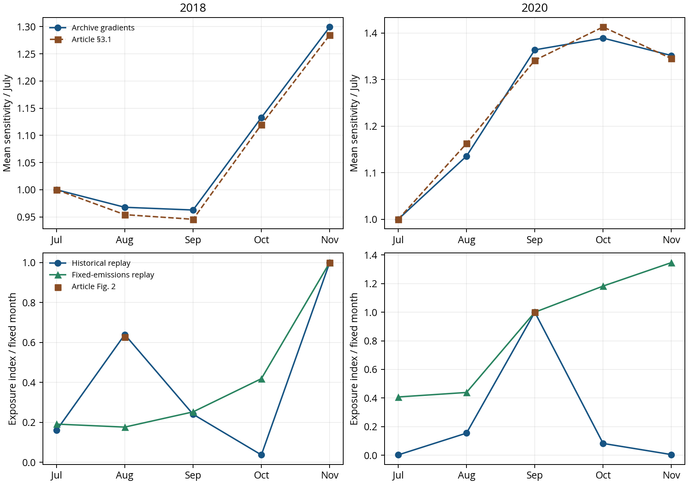
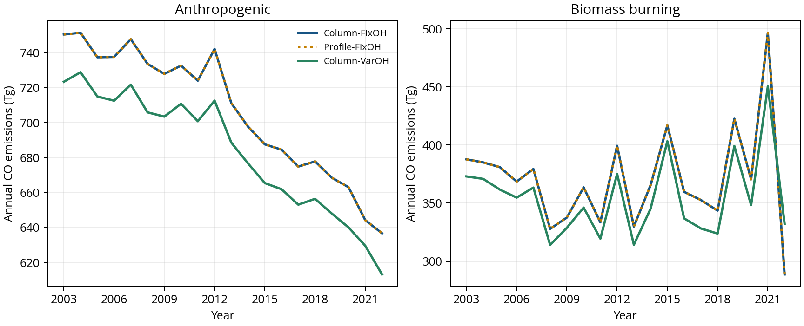

GC-adjoint 论文复现对比报告
核对日期为 2026-11-27。本报告沿用 FireEarth paper_replicates 的实验矩阵、逐图核对、差值和证据索引。四篇论文均使用 GEOS-Chem adjoint。现已完成 Kelp 2023 的 West 受体归档梯度复算、Tang 2026 的全球后验排放复算，并复核 Tang 2023 的原生排放模块和本地伴随基准。四篇整文均尚未完成端到端重跑。
实验总表
| 论文 | 论文实验 | 已验证 | 整篇复现所缺证据 |
|---|---|---|---|
| Kelp 等（2023）美国西部野火与计划烧除 | GC-adjoint v8-02-01，GEOS-FP，北美嵌套 0.25°×0.3125°。2018 和 2020 年各 7–11 月，11 个受体 | 10 个月 West 原始梯度与服务器 GFED4s 重算 Fig. 2 的归一化 West 曲线。两年历史暴露峰值月匹配 | 其余 10 个受体的原始掩膜或梯度、绝对单位后处理、历史计划烧除数据版本，以及原模式整月成功重跑。论文 · 代码和运行归档 |
| Tang 等（2026）MOPITT 约束全球 CO 源 | GC-adjoint v35n，2°×2.5° MERRA-2、47 层，2003–2022；先做顺序 KF，再做三组月度 4D-Var | 积分 60 个年度 NetCDF 的 720 个实验月。人为排放趋势方向和 2021 年火排放峰值大体一致，两组归档逐年重复，Tables 2–3 的全球均值有系统差异 | 与论文一致的三组后验发布版、同化前处理、KF 初值与每小时海洋 CO 边界、OH 快照和 4D-Var 配置。论文 · 后验排放 |
| Tang 等（2023）HEMCO 与 MERRA-2 接口 | GC-adjoint v35n，4°×5°、47 层。2015 年 tagged CO，GEOS-FP 与 MERRA-2 双气象，含有限差分、OSSE 和 MOPITT V7J | Table 1 原生 CEDS 陆源积分 613.566419 对纸面 613.85 Tg CO/年。本地 24 小时 PBL 初值伴随与中心差分最大相对差 0.001094% | 2015 整年原实验的区域排放及完整初值、配置和观测算子。Fig. 6(b) 需按原文扰动排放缩放因子。论文 · 作者源码 · 已完成验证 |
| Dedoussi 等（2024）UCX 平流层化学 | 全球 4°×5°、72 层、GEOS-5。五年正演、单步化学梯度、2010 年 3 月和 9 月两周伴随 | 原始研究代码、4°×5° GEOS-5 一小时模板及定量验收值已定位。未改作者代码的编译试验已执行 | Zenodo 发布包缺 Fast-JX 所需模块，研究用 GEOS-5 初值和气象也未找到。论文 · v35f 原始研究分支 |
Kelp 等（2023）
| 图表 | 论文实验 | 本次核对 |
|---|---|---|
| Fig. 1、Table 1 | 七个州级、一个 West 和三个社区受体 | 归档运行目录提供 West 掩膜，包含 4,195 个格点，以及共同使用的 2020 人口文件。其他受体的掩膜未在已公开的两个 ZIP 成员目录找到 |
| Fig. 2、§3.1 | 十个月的历史暴露。每季另固定论文指定月份的火排放，替换当季各月的输送梯度 | 归档提供十个 West 梯度文件，每月四个火排放梯度。重算两条归一化 West 曲线并对照论文数值 |
| Figs. 3–5 及补充材料 | 计划烧除的 50% 局地排放削减、跨区暴露、MTBS 和 NFPORS 地理对照 | 已定位论文流程，完整受体梯度、掩膜与原用地理数据集待补 |
归档梯度保留 J/kg 标签。实读网格为 225×202，中心经度 130°W–60°W、纬度 9.75°N–60°N，论文 §2.2 所写的北美范围为 140°W–40°W、10°N–70°N。脚本沿用归档坐标，按球面格盒重叠面积将服务器六类 GFED4s 干物质排放积分到归档网格。GFED4 排放因子给出 BC、OC，疏水和亲水比例沿用作者源码中的 80/20 与 50/50，再与对应的四种梯度相乘求和。服务器 HEMCO/GFED4/v2023-03/README 记录 2020–2022 地表干物质数据由 Kelp 提供。各季固定月份按论文设置为 2018 年 11 月和 2020 年 9 月。绝对梯度的单位及论文所用排放掩膜和处理流程尚未核实，图中给出归一化暴露，原始乘积列在 CSV。论文 §2.2–3.1 · GFED4 文件说明 · 复算脚本 · 逐月对比
| 指标 | 归档复算 | 论文 |
|---|---|---|
| 2018 年 West 平均敏感度峰值月 | 11 月 | 11 月 |
| 2020 年 West 平均敏感度峰值月 | 10 月 | 10 月 |
| 2018 年 West 历史暴露峰值月 | 11 月 | 11 月 |
| 2020 年 West 历史暴露峰值月 | 9 月 | 9 月 |
| 2018 年 8 月与 11 月 West 历史暴露比 | 0.639 | 0.627（5.2 ÷ 8.3 μg/m³） |
| 2020 年固定 9 月排放，11 月与 9 月 West 暴露比 | 1.347 | 当前未核实对应论文数值 |
两条梯度序列各自以 7 月归一化后，十个点最大绝对差为 0.027。0.639 对 0.627 是同一受体的跨月比值差。各季固定月份自身归一化为 1，图上的对应重合点来自定义。所用全归档网格内 2018 年 GFED4s 的 BC + OC 总质量通量在 8 月最高，支持在图中明确标出固定 11 月依照论文情景选择。其余 10 个受体、绝对浓度及计划烧除影响仍待比对。论文 Fig. 2 与 §3.1 · 图与逐月数据

原始代码重跑
作者包公开 4°×5° GEOS-FP 区域边界序列、北美嵌套月初重启、West 掩膜以及 2020 年 11 月原配置。预编译可执行文件启动时缺原环境的 libnetcdff.so.5 和 libnetcdf.so.7（352854）。本地用相同归档源码重新编译，全球版与嵌套版均成功（352860、352859）。构建通过命令行适配 Intel OpenMP 和本站库路径，构建副本的源文件逐字节核对。
首日测试使用作者 2020-11-01 的重启、北美边界、网格和目标函数，将结束时间设为次日并配套设置输出日。运行目录配置使用本站路径和作者脚本所需的两行 ITER。日气象是官方同版本 NA 数据，静态场 CN 从 Harvard GEOS-Chem 官方桶取得。MEGAN 初始化需要此前 15 天的 A1，使用服务器同分辨率 GEOS-FP 文件进行无插值裁剪。11 月 1 日测试中，裁剪结果与官方 NA 文件所有变量逐值相同。首次运行生成的 diaginfo.dat 与 tracerinfo.dat 覆盖了本地解包副本；两份文件已按 ZIP CRC-32 恢复，复跑使用独立的运行副本。作者人口读取例程仍使用 Harvard 上的硬编码绝对路径，这需要运行时映射。 作者归档 · 原生北美日气象与静态场
复编译后的作业 352894 读完前 15 天 MEGAN 所需 A1，并成功读取 2011-01-01 的 CN 以及 2020-11-01 首批 A1、A3cld、A3dyn、A3mstC、A3mstE、I3。随后 rdland.f 找不到 leaf_area_index_200202/vegtype.global，程序以 31 退出，尚无本地正向或反向梯度。Tang 基准使用的同名静态文件是 72×46 的 4°×5° 文件，Kelp 的北美算例是 225×202。所需版本仍未定位。日志保存在 run/tasks/kelp_2023_gcadj/day_20201101/geos.352894.log。 GEOS-Chem 旧版土地类型和 LAI 文件说明
Tang 等（2026）
顺序 KF 自 2002-10-01 开始同化 MOPITT，生成月初 CO 与海洋每小时 CO 边界。三套 4D-Var 分别使用 V9J 总柱加 2013 年 OH、V9J 廓线加 2013 年 OH、V9J 总柱加 TCR-2 逐年 OH。需保留各实验的观测算子、采样、误差及干扰源设置。服务器同网格 GEOS_2x2.5/MERRA2 的 A1、A3cld、A3dyn、A3mstC、A3mstE 和 I3 于 2003–2022 年各 7,305/7,305 个日文件。服务器还存有对应时段 6,857 个 MOP02J V9 日文件，数量按归档文件名统计。同化前处理及 2002 年 KF 生产流程仍需核对。实验设计 §2.1–2.2 · NASA MOPITT
| 图表 | 必需计算 | 本次核对 |
|---|---|---|
| Fig. 1 | 先验缩放、优化设置 | 方法核对 |
| Fig. 2、Table 1 | KF 初值对柱 CO 偏差的影响，WDCGG、HIPPO、ATom 验证 | 已定位适用数据，未重新求解 |
| Figs. 3–7、Tables 2–3 | 历年人为、火灾和化学 CO 源，全球、半球和区域趋势 | 四类份额完成全球年度积分，重画全球人为和火灾曲线并比较全球行。区域及统计显著性待核对 |
| Figs. 8–10、Table 4 | 前向对照，源类别对 CO 浓度变化的归因 | 需原始对照和三组更改排放的前向运行 |
| Fig. 11、§3.4 | 固定 OH 与 TCR-2 的差异以及排放缩放因子 | 两组 NMVOC 氧化生成的 CO 年均量可核对。OH 柱与缩放因子地图待核对 |
| 全球部门及实验 | 复算均值 | 论文均值 | 复算趋势 | 论文趋势 |
|---|---|---|---|---|
| 人为 Column-FixOH | 706.54 | 612.8 | −5.97 | −5.6 |
| 人为 Profile-FixOH | 706.54 | 572.2 | −5.97 | −5.0 |
| 人为 Column-VarOH | 683.38 | 590.1 | −5.68 | −5.3 |
| 火灾 Column-FixOH | 370.52 | 345.6 | +0.63 | +0.9 |
| 火灾 Profile-FixOH | 370.52 | 326.6 | +0.63 | +1.7 |
| 火灾 Column-VarOH | 354.45 | 325.7 | +0.76 | −0.1 |
| NMVOC 氧化 Column-FixOH | 407.48 | 407.6 | −0.03 | — |
| NMVOC 氧化 Column-VarOH | 391.28 | 391.4 | +0.05 | — |
均值以 Tg CO/年计，趋势是 2003–2022 年年度总量的一元线性回归斜率，单位为 Tg CO/年²。四种归档通量以 kg/m2/s 储存，按实际月天数和含 1° 宽极地格盒的球面面积积分。Column-FixOH 的火灾后验在 2021 年达到 496.67 Tg CO，接近论文约 500 Tg。2003 至 2022 年端点的人为排放降低 15.16%，落在论文报告的 14%–17% 区间。两组 NMVOC 氧化 CO 均差约 −0.12 Tg CO/年。人为和火灾六项均值仍存在 24.92–134.34 Tg CO/年的差异。Col-FixOH 与 Prof-FixOH 的同年文件 20 对全部 SHA-256 相等，ZIP 内记录的 CRC-32 也相等。由此无法用当前发布文件独立验证论文中的两组差值。所用归档为 Zenodo 17221834，ZIP MD5 为 dd45da312ae7d3018e7f1ac64fa777a5。论文 Table 2 · 论文 Table 3 · 论文 §3.4 · 复算代码 · 年度全表 · 全球行对比 · 20 对校验和

Tang 等（2023）
| 图表 | 论文基准与复核结论 |
|---|---|
| Table 1 | 作者 CEDS 模块在服务器数据上重算 2015 年全球陆源人为 CO 为 613.566419 Tg，GC-adjoint-HEMCO 论文值 613.85 Tg，差 −0.283581 Tg（−0.0462%）。船舶在源代码中单独读取 |
| Fig. 6(b) | 论文扰动 CO 排放缩放因子。本地 24 小时 4°×5° MERRA-2 用初始近地面 CO 缩放因子 ±10%，最大相对误差 0.001094%，相对 L₂ 误差 0.000113%，独立运行的诊断文件哈希相同。这个试验验收 PBL 梯度，Fig. 6(b) 的论文扰动算例尚待重跑 |
| Figs. 2–5、Table 2 | 2015 年区域排放、季节循环，MERRA-2 对 GEOS-FP，以及 GC-v12、GC-Adjoint-HEMCO、GC-Adjoint-STD 三组地表和柱 CO。需作者区域 HEMCO_1x1 及完整先验和初值 |
| Fig. 7、Table 3 | OSSE-FullOBS 与 OSSE-MOPITT，先验缩放 0.5、真值 1.0，前者跑 40 次迭代后的六区域缩放因子已知。本地尚未独立复跑 |
| Figs. 8–9、Table 4 | 2015 年 MOPITT V7J 月初状态校正与人为 CO 反演。完整观测算子与初值待定位。本地 PBL 个例的构建副本关闭 MOPITT/HDF4，三处前置路径适配详见补丁 |
论文和图表 · 现有复跑命令与输入校验和 · 局部路径改动
Dedoussi 等（2024）
| 图表 | 论文基准与复核结论 |
|---|---|
| Figs. 1–2 | 三组使用相同初值。三年自旋后，2008–2012 年对比 Classic UCX、旧伴随正演和 UCX 伴随正演。主要指标含带状平均总柱臭氧 2.7% 的五年差异。原初值待定位 |
| Figs. 3–4 | 1 小时、46×72 柱，关闭水平输送和对流，比较 GC-adjoint 与单边有限差分。第 20、40 层 NOₓ 分别扰动 100、300 kg 后，Oₓ 化学梯度的论文 R² 均大于 0.998。该最短实验尚未出本地梯度 |
| Figs. 5–9 | 2010 年 3 月及 9 月各两周。重做对 Cl、NOₓ、BrO、ClO 的平流层 Oₓ 敏感度及不同高度带的梯度，需要同一次三年自旋产生的状态 |
原始代码包中的一小时模板使用 2010-01-01 00–01 UTC、4°×5° GEOS-5、restart.geos5.test.YYYYMMDDhh。包中仅有 GEOS-4 的历史重启。本站对应时段找到 GEOS-IT 气象，GEOS-5 气象及该模板的初值未找到。原作者 Makefile 的 -openmp 被本站 Intel 2021 拒绝，第二次通过命令行改用 -qopenmp 后编译至 CMN_FJX_MOD.o，报 No rule to make target（352850）。档案中缺 CMN_FJX_MOD 源文件，服务器通用 v36 则有此文件，暂未将不同分支的 Fast-JX 混入论文原始代码。论文 §3–4 · 论文原代码包
2°×2.5° 原始 v36 冒烟与复算命令
此前的 GEOS-FP 和 MERRA-2 被动 CO 各完成 2013-07-01 00–03 UTC 的前向输送（352590、352591）。两者使用相同原始可执行文件和 GEOS-FP 读取器，MERRA-2 通过适配的输入布局喂入。这个证据验证了短时气象读取和正向输送。Tang 2026 的 47 层 MERRA-2 tagged CO 反演和原论文的伴随配置另需验收。GEOS-FP 冒烟验证 · MERRA-2 冒烟验证
从 EarthModelHub 根目录执行，两个脚本读取已下载到 input/raw/papers 的归档成员。Kelp 还读取服务器 GFED4s，路径可通过 --gfed-dir 和 --emission-factors 指定。复算输入及其校验和见清单。 SHA-256 输入清单
p=docs/papers/models/geoschem/paper_replicates/gcadj
sha256sum -c "$p/inputs.sha256"
OPENBLAS_NUM_THREADS=1 prefix/mamba/envs/fair/bin/python "$p/recompute_kelp_2023.py"
prefix/mamba/envs/fair/bin/python "$p/recompute_tang_2026.py"